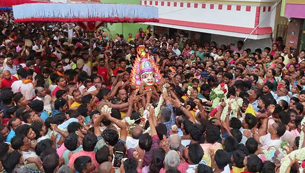

GANGAIAMMAN TEMPLE

-
The Gangaiamman Temple in Gudiyatham is a significant religious site dedicated to Goddess Gangaiamman, a manifestation of the Hindu goddess Shakthi. The temple is likely located in Gudiyatham, Tamil Nadu, India. Goddess Gangaiamman is believed to be the protector of her devotees, particularly against diseases and troubles.
Like many temples in Tamil Nadu, the Gangaiamman Temple likely features traditional South Indian temple architecture, with colorful sculptures, intricate carvings, and a gopuram (tower) adorned with elaborate artwork depicting various Hindu deities and mythological scenes. The temple is likely adorned with vibrant decorations during festivals and special occasions, creating a lively and spiritually uplifting atmosphere.
Devotees visit the Gangaiamman Temple to offer prayers, seek blessings, and perform rituals to honor the goddess. It serves as a focal point for religious and cultural activities within the local community. Festivals such as Navaratri, Panguni Uthiram, and Thai Poosam are likely celebrated with great enthusiasm and devotion at the temple, attracting devotees from near and far.
The temple likely has priests who conduct daily rituals, pujas (worship ceremonies), and special ceremonies on auspicious occasions. Devotees may also participate in charitable activities organized by the temple, such as annadanam (food donation) and other social welfare programs.
Overall, the Gangaiamman Temple in Gudiyatham holds deep religious and cultural significance for the local community, serving as a place of worship, spiritual solace, and community gathering.
Click image to view GANGAIAMMAN TEMPLEin map